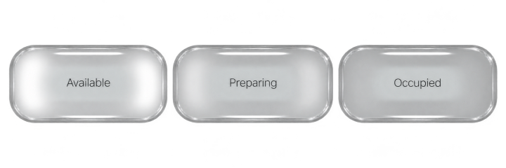

At the beginning of this project, we found many problems in YIH. Some students felt too hot in open spaces, while some air-conditioned rooms were not fully used. We also found that some students did not know which rooms they could enter.
At first, I thought our job was to solve these problems. But as we did more research, I became more confused. We had collected a lot of information, but I couldn't clearly explain what we were actually trying to design.
I remember feeling lost around the mid-term. Every research finding seemed important, and every problem seemed worth solving. I kept thinking that maybe we needed more interviews or more research to understand the building better.
Later, we started to see a common problem behind these findings: students did not always understand what the building offered or how they could use it. This led us to the idea of transparency.
But our professor also challenged us. We were focusing too much on YIH itself. We needed to think about how this problem could also happen in other green buildings.
Looking back, I learned that finding problems is not the same as defining a design problem. More research does not always give us a clearer direction. Sometimes, we need to stop collecting information and start asking which findings really matter.
My key learning: Research is not just about finding more problems. It is about understanding which problem is worth solving, and why.
Entry 02
Was All That Exploration a Waste of Time?
September–October | Exploring and Giving Up Ideas
I remember being excited when we started exploring possible solutions. I really didn't want to make another App. I wanted to find something more interesting, something that could make people experience the building in a new way.
We explored ways to interact with the building without screens. One idea was to use natural wind to power a physical sign. Since wind was an important part of the YIH experience, I thought this could be a meaningful way to connect our design with the building.
But we soon faced problems. Wind was not stable, and different parts of YIH had different wind conditions. It was difficult to make sure the sign could always show the right information. We did not find a good way to solve this problem within our project.
In the end, we moved away from this idea and chose a more digital solution.
This made me question our process. If we spent so much time exploring different ideas but still ended up with an App, was all that time wasted?
I don't think so.
The exploration helped us understand what our design needed to achieve. We learned that making something interesting was not enough. The information also needed to be clear and reliable.
I also realized that having an idea or an intuition is not a problem. But I should not only look for evidence that supports it. I should also look for evidence that might prove me wrong.
My key learning: Exploration does not always lead to a new solution. Sometimes, its value is helping us understand why an idea works, why it doesn't work, and what we should do next.
Entry 03
Choosing a Solution I Didn't Expect
November | From Ideas to a Design System
Grounded website · Finding a spot
I have always believed that technology and data can help buildings become smarter. To me, a smart building is not just a building that looks modern. It is a building that can communicate with people, respond to their needs, and improve over time.
But at the same time, I didn't want our final design to be just an App.
As our project moved forward, we realized that people needed information before they even arrived at the building. They needed to know which spaces were suitable for their activities, what the environment was like, and how they could use those spaces.
This was difficult to achieve through physical signs alone.
We finally developed Find Your Spot, a system that combines an App with physical interactions. The App helps people find and choose spaces. The Light Ring shows room status when they arrive. NFC allows users to make limited changes to their local environment.

Final room status light
During this stage, we also removed or changed many functions. For example, we decided that individual students did not need to check in, while activity organizers still needed this function.
I started to understand that design is not about adding as many functions as possible. Every function needs a reason to exist.
I still believe technology is important, but now I think I should be more careful about how I explain its value. Technology should not be used just because it is advanced. It should help us do something that is difficult to achieve in other ways.
My key learning: A good design choice is not always the one I like most. It is the one I can explain and support with clear reasons.
Entry 04
Learning When to Stop
Final Stage | Decision-Making, Teamwork and Personal Growth
One of the biggest challenges I faced in this project was knowing when to stop exploring.
At the beginning, I was always happy to hear new ideas from my teammates. I didn't want to stop anyone's creativity because I was afraid we might miss a better solution. I also enjoyed getting new insights from users. Every new finding made me feel that we were getting closer to understanding the problem.
But sometimes, we kept exploring without making much progress.
When we faced a difficult decision, we often thought that maybe we needed more research or another idea. Looking back, I wonder if sometimes we continued exploring because making a decision was harder than finding another possibility.
I also learned something about teamwork. I used to think that if we discussed something together, everyone would understand it in the same way. But during our final preparation, I realized that we did not always share the same understanding of the project. I had listened to different ideas, but I had not always made sure that we agreed on our goals.
Compared with the mid-term, I felt much more involved in the final stage. I understood the building and our design problem better. I could see what our final solution might look like, but I also became more aware of our time and what we could realistically finish.
We had to give up some ideas, reduce some functions, and make choices. I began to feel more in control of the project, not only because I knew more, but because I was learning how to make decisions.
I still don't think I have found the perfect balance between exploring and deciding. This is something I want to improve in future projects.
My key learning: Being open to new ideas is important, but being a designer also means knowing when to choose a direction and taking responsibility for that choice.